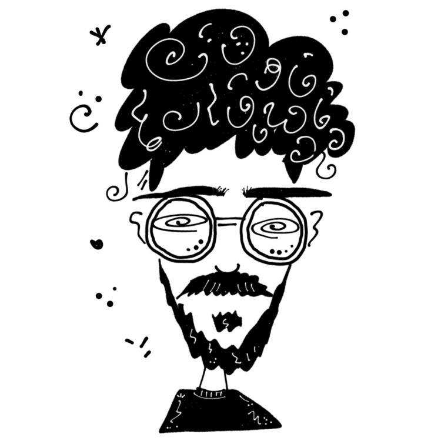
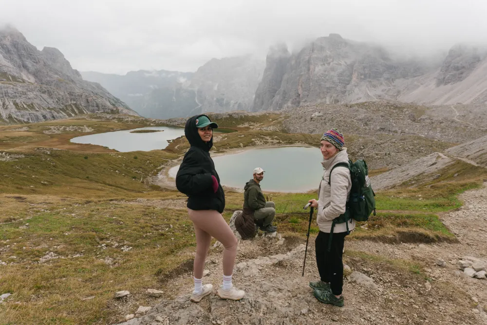
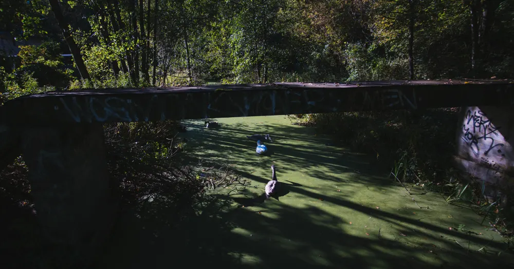
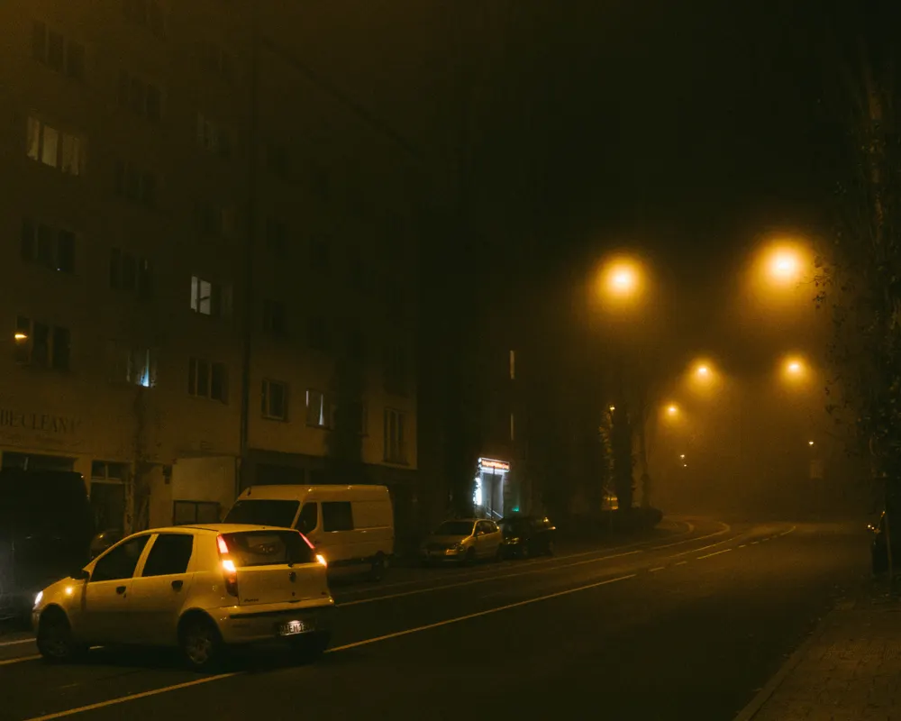
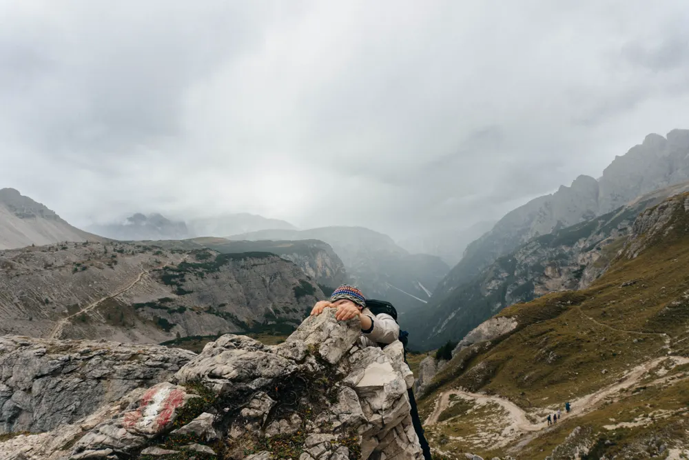
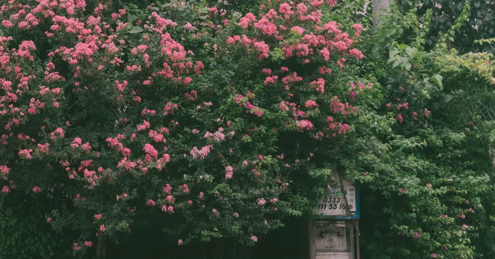
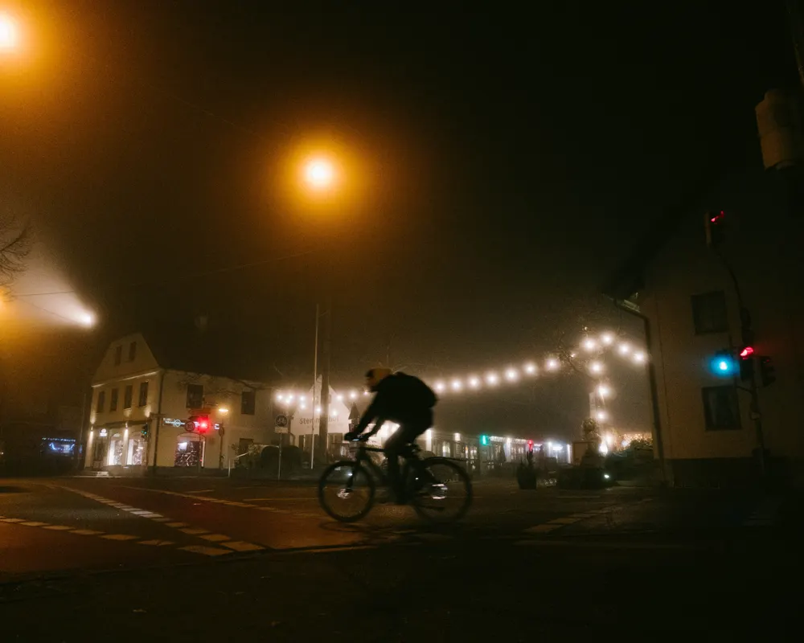
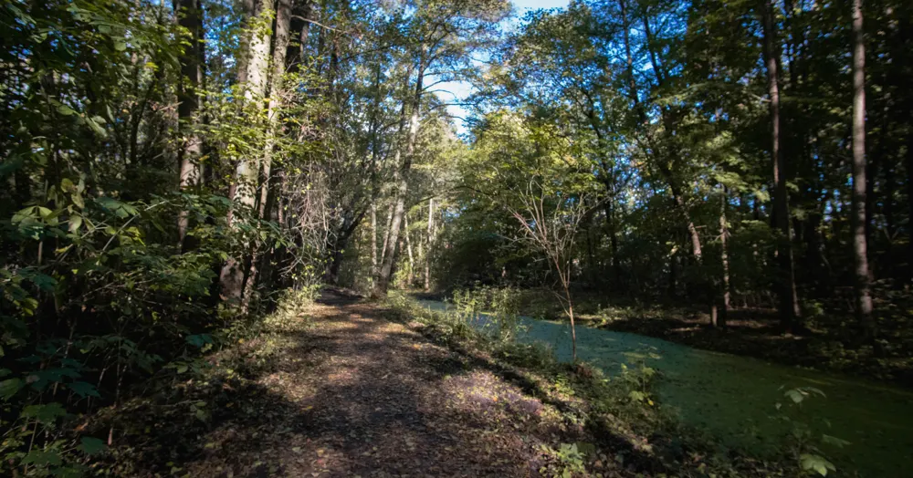

Issue Nº 07
Free · read anywhere
Aymen
Rizwan
Product designer
Product designer with 6+ years of experience, specialising in B2C experiences and EdTech.
Currently building Seda Speech as a solo designer and engineer.

A bit about me
I'm particularly interested in using technology for learning, fostering creativity, and designing for social impact.
I've spent six years designing consumer products, mostly in language learning and study tools at Lingoda and StudySmarter. Lately I design and build my own products end to end, from speech therapy to browser instruments.
Away from product work I take photographs, make films, produce electronic music, and eat a lot of paratha rolls.
Off-screen







